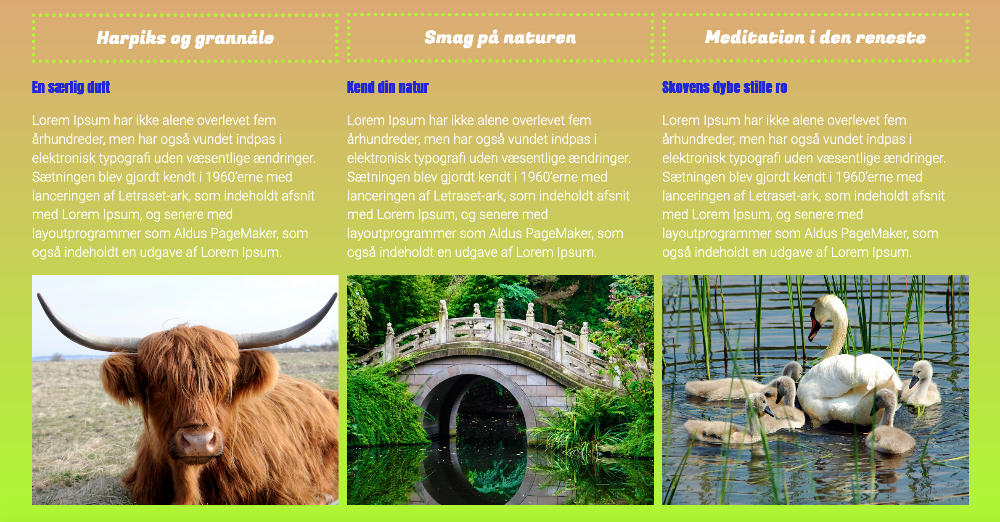
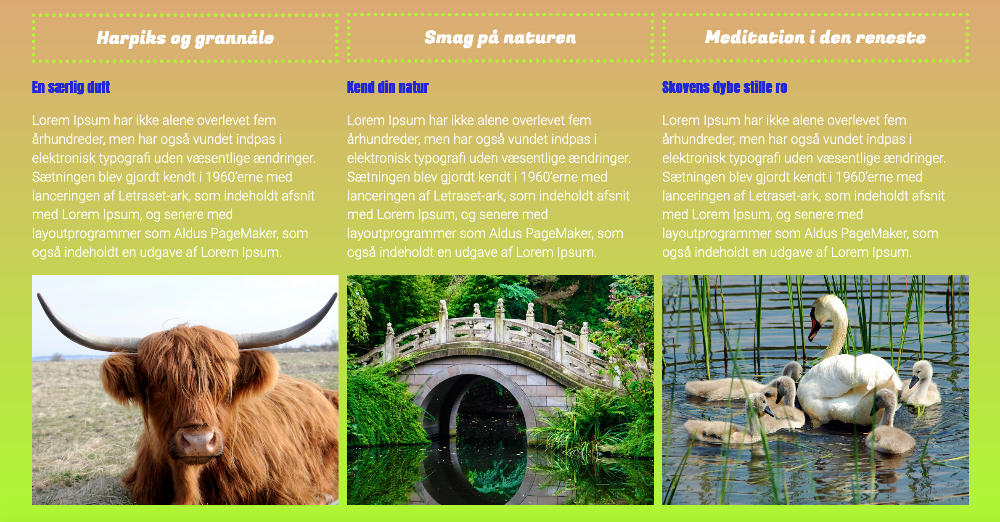

Portfolio
Tema 02 – Grundlæggende Web
I temaet ”Grundlæggende web” blev vi introduceret til forskellige stilarter. Gruppen jeg var i, fik tildelt stilarten ”Brutalisme”. Vi stiftede senere i temaet bekendtskab med layoutdiagrammer og derefter basic html og css. Vi arbejdede med forskellige farver og fonte f.eks. Sans Serif (uden fødder) og Serifs (med fødder). Derudover udarbejdede vi et favicon i illustrator, der blev implementeret på vores eget site. Et andet nyt program, som blev en del af værktøjskassen, er Photoshop. Vi redigerede et splashbillede, som passede til stilarten og styletilen. Slutteligt satte vi alle små komponerede elementer sammen på vores eget site. Feedback på mit responsive site lød på, at min side ikke var fuldkommen responsiv. Menu-funktionen virkede ikke på mobil version, og det samme gjaldt nogle overskrifter. Dette er nogle af de kritikpunkter, som jeg har forsøgt at efterkomme på aktuelle site.
Farvepalette til responsive site
 


Tema 03 – Grundlæggende UX
I ”Grundlæggende UX” arbejdede vi meget med research. Vi indsamlede vores egen empiri ud fra både kvalitative (meninger) og kvantitative (tal) undersøgelser. Ud fra al den indsamlede information skabte vi dernæst en prototype på vores website i Adobe XD. Her skulle de indsamlede præferencer og ønsker tages i betragtning. Slutteligt blev prototypen testet endnu en gang. User interface eller brugerfladen (UI) og User experience, som er et udtryk for brugerens oplevelse (UX) var altså de to hovedbegreber under dette tema. I forløbet med udviklingen af prototypen, fik jeg feedback som følgende: På alle undersider, skal logoerne føre til forsiden. Det er en genvej, der er kendt fra almene hjemmesider og derfor en funktion, som også skal virke på prototypen. Dernæst skulle siden være mere overskuelig og nem at navigere i. Denne feedback har jeg forsøgt at tage med mig, i udviklingen af nærværende site. Funktionaliteten er essentiel for at en website skal fungere.
Tema 04 – Grundlæggende Animation
I ”Grundlæggende Animation” blev vi introduceret til programmeringssproget JavaScript. Som har til formål, at motivere og engagere brugeren. Som fundament til det spil vi udviklede, udarbejde vi statemachinediagrammer. Vi samlede stilinspiration og kastede os derefter ud i vores eget projekt, med at tegne spilelementer i Adobe Illustrator. Vi fik feedback på grafikken, og jeg blev gjort opmærksom på at jeg med fordel kunne overveje en anden font, hvilket jeg også fik implementeret. Slutteligt i temaet blev vores individuelle spil testet af andre medstuderende og feedback blev indhentet. Mit spil viste sig at være en smule svært at forstå, samtidig med, at tempoet var for langsomt. Derfor blev tiden sat op, og jeg fik udarbejdet en vejleding til spillet, så konceptet fra start stod klart fra start.
Farvepalette for spil
Tema 05 - Grundlæggende Indhold
I ”Grundlæggende Indhold” blev vi præsenteret for videoproduktion. Vi arbejdede med programmer som Premiere Pro og Audition til redigering af videoerne. Her lærte vi f.eks. at sammensætte video med ekstern lyd og indsætte B-rolls for at skabe dynamik. Videoproduktion er super interessant, da man oplever hvor store forskelle vinkler, klippetempo og baggrundsmusik kan gøre for stemingen. Som feedback på vores pilotprojekt med kokken David, blev vi rost for baggrundsmusikken og indsatte B-roll klips. Videoproduktionen var god forberedelse til vores redesign opgave. En kulmination af alle temaer. Vi arbejdede bl.a. med tests, diagrammer, moodboards, rentegning af logoet, photoshop, videoredigering og slutteligt kodedelen; som både indeholdt html, css og JavaScript. Opgaven fungerede godt som opsummering, og jeg har taget mange nyttige færdigheder med mig på dette site. Et eksempel kunne være en overskuelig og responsiv menu.